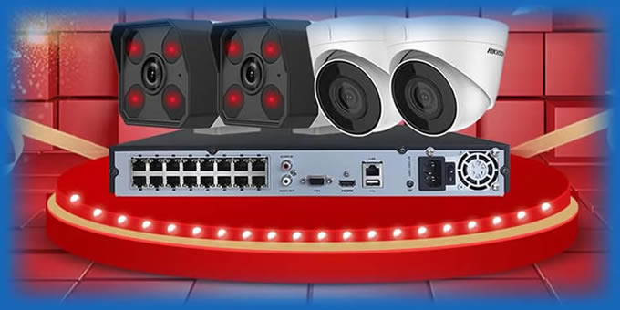
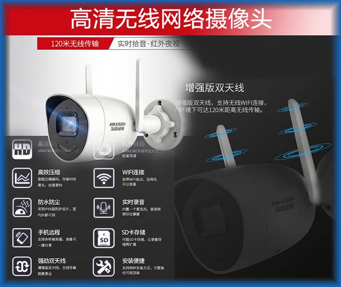

解决电脑系统问题
-
1、系统无法正常启动、启动慢，不能关闭系统
-
2、系统使用中出现蓝屏，死机，程序无响应
-
3、盗版系统泄露隐私，损毁重要资料数据，影响工作和生活
-
4、使用盗版系统，无法安装运行专用程序
-
5、系统无法升级、不能重装系统，存有木马，存在漏洞
-
6、系统使用中出现一些莫名其妙的问题。
-
7、安装Win 10，8.1实现秒开电脑，提升安全性，增强系统使用体验
-
手机维修
应用程序和数据安全
-
1、QQ、MSN等常用工具不能正常运行
-
2、办公软件出现问题，不能启动，功能不全，或是其它的疑难问题
-
3、这里有办公软件设计人员：如果要用Word 或Excel进行大量的操作，长时间在电脑旁会影响你的身体健康和心情，这里有编程专家，你把你的要求、目标告诉专家，设计出专门的程序可简化你的操作！（报酬看工作量的多少和具体情况，价格公道合理）
-
4、数据安全管理，计算机病毒查杀，保障网络数据安全，误删数据可及时进行数据恢复
-
5、帮你解决应用电脑程序出现的一些莫名其妙的问题
网络问题
-
1、无法上网、上网慢、或是断网，络不稳定，安装家用和办公网络
-
2、把网络分享给手机、电视、电脑等其它网络设备，让你的网络电视、电脑、手机全都可以应用网络，达到一网多用，多人共用一个网的目的，节省资源，节省开支
-
3、校园网管理、无盘安装与管理
-
4、Windows、Linux(Deepin Linux、Ubuntu Linux、UbuntuKylin、Elementery、Fedora、Archlinux)服务器系统安装与管理，包括系统备份，用普通的备份方法是无法完美备份的，安全快速的系统备份服务，保障你的服务器安全，用Linux系统作服务器，这将大大提高你的服务安全及运行效率和稳定性。用户自己配置服务器太麻烦，往往不知所从，配置难度极大！为你配置的Web或是Ftp服务器，界面美观，操作方便，性能稳定。方便发布信息，宣传你的业务，收集客户和你的队伍的需求，及时调整你的业务，争取最大的赢利。将务器放在网络上，世界各地人员都可以访问，给你留言，你也可以将服务器放在你的公司或是家里及特殊场合，作为专用服务器。省去租用域名和空间的繁锁
-
5、网站设计：为你的团队制作一个漂亮、高效、安全的网站，你可以在网站上发布消息、推广你的产品或服务
-
9、网线制作和各种网络的连结及连网故障排除
-
10、其它网络设备（交换机、路由器、网线）的销售、安装及日常故障处理、保障网络的畅通
硬件维护
-
1、安装监控：手机，电脑随时查看监控动态，图像清晰，白天黑夜均可录制和分享，及时向你报告不安全因素，保障您的财产和人员安全。有线和无线监控可选，最佳布线和调试，指导使用。
放心的监控服务，使用更方便↓
1、适用于超市、医院、学校等场所的有录像机的监控：
如图：

2、适用于家庭或小店的无线监控，图像一样的清晰，随时可查看的监控：
如图：

相信口碑：用过的都说好！
-
2、电脑硬件疑难问题排查与解决
-
3、计算机硬件销售与完善的售后服务：
我们帮助你决主机等硬件、软件的各种疑难问题。还售和维护各种办公家用设备：主机 显示器 鼠标 键盘 音箱（音频线制作，电脑到调音台到功放！手机输出到音箱） 主板 CPU 显卡（视频分支器） 声卡 网卡 风扇 数据线 光驱 硬盘 U盘，读卡器 刻录数据光盘、影视光盘、广场舞光盘 婚礼拍摄，视频编辑（年轻没有不可以，那就留下美好的回忆吧！）
广告制作
-
1、大型、中型、小型广告业务（承接室内室外广告制作）
-
2、相片修饰、美化（留住春留住美，有了回忆不后悔）
-
3、音乐、视频处理（制作MP3，制作拭个性铃声，制作个人短片，婚庆视频等）
当科技进入生活，它为我们生活提供了方便，提高我们生活的质量，但我们应用科技的同时，科技也对我们提出了挑战，事实上人们为了学习、工作、生活而忙碌着、生活得很开心，生活质量也在提高。在使用电脑、网络时常常遇到麻烦。非常感谢你进行业务咨询和联系，我们可第一时间为你提供最好的上门服务。
QQ：1178453114
QQ群：161023033
邮箱：dengshuangjang@126.com
电话：15183569686